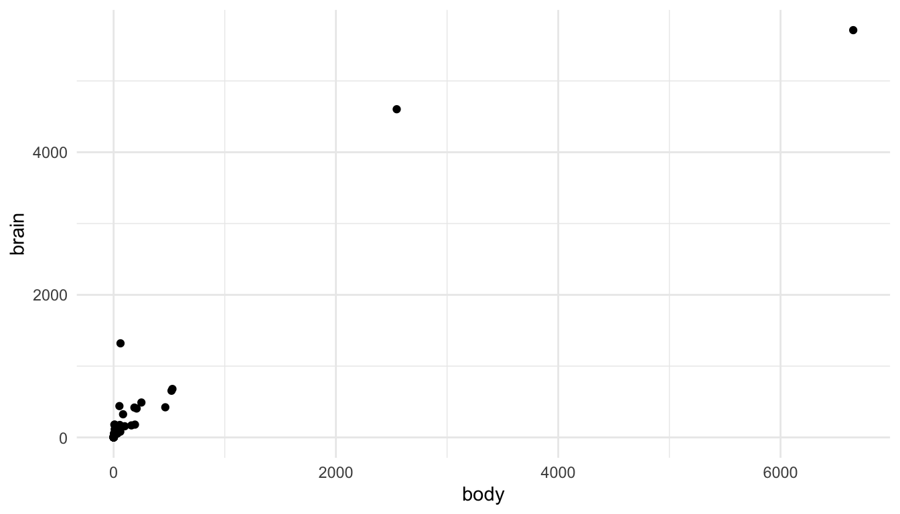
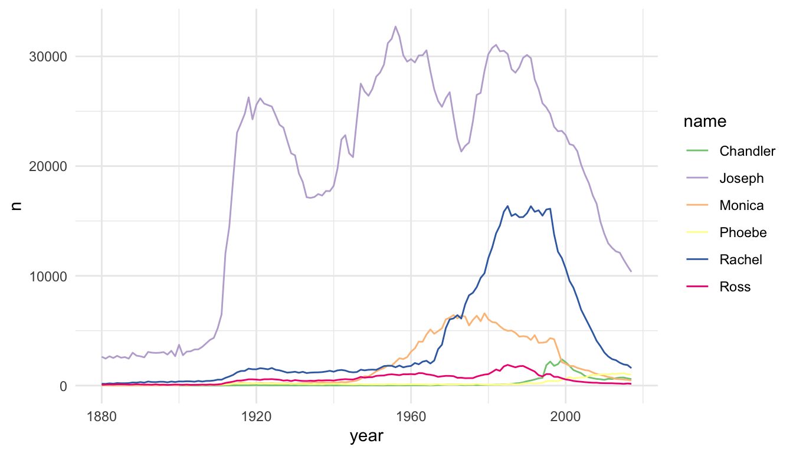
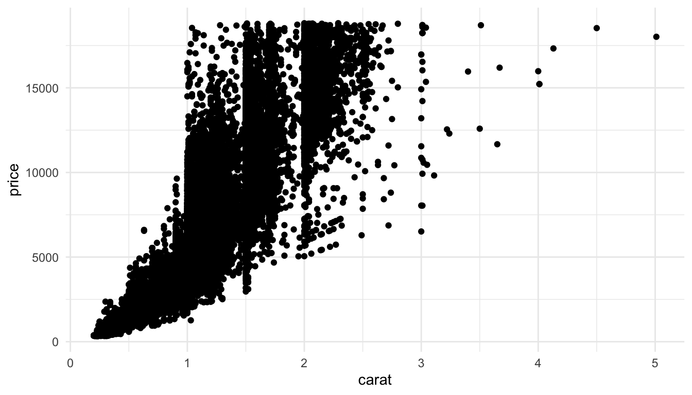

8 Other Topics
The purpose of this section is to discuss a few common issues with visualizing data that have not come up in previous examples. The section is not a “catch-all” for all visualization topics; instead, the purpose is to discuss a few topics that come up relatively frequently.
8.1 Outliers and Area Plots (Class Prep)
8.1.1 Outliers
Visualizations when there are large outliers present can be challenging. On the one hand, removing an outlier from a visualization for no reason besides “it’s an outlier” eliminates an otherwise perfectly valid data point. On the other hand, including the outlier can make the visualization essentially meaningless for all of the other points.
Let’s look at this issue with an example. You may have worked with the mammals data set (or something similar) in STAT 213 to investigate statistical transformations for modeling. A scatterplot of mammal brain weight vs. mammal body weight is given below. The outliers here are two species of elephants included in the data set.
We can see the issue: the visualization tells us that there are two large outliers, but that’s about it. We can’t distinguish the values for most of the other mammals in the data set.
There are a few strategies to deal with such outliers. First, you could remove them and state in a figure caption that you removed them.
ggplot(data = mammals |> filter(body <= 600), aes(x = body, y = brain)) +
geom_point() +
labs(caption = "Two species of elephant in the data were removed before constructing this plot.",
title = "Option 1")
Second, you could use use axis breaks:
## install.packages("ggbreak")
library(ggbreak)
ggplot(data = mammals, aes(x = body, y = brain)) +
geom_point() +
scale_x_break(c(750, 2500, 2700, 6400)) +
labs(title = "Option 2")
You could do some things to make this plot look a little nicer, but I personally do not like scale breaks. I think they make the plot look confusing and potentially misleading as the reader has to pay really close attention to the x-axis to interpret the plot correctly.
A third option is to do exactly what you would have done in STAT 213: perform a statistical transformation of the data. This has exactly the same benefits and drawbacks as it did in modeling: your model/plot works a lot better at the cost of interpretation. The following uses the scale_x_log10() and scale_y_log10() to plot a log-log transformation of brain vs. body weight.
library(MASS)
ggplot(data = mammals, aes(x = body, y = brain)) +
geom_point() +
scale_x_log10() +
scale_y_log10() +
labs(title = "Option 3")
Note
The scales on the x and y-axis now increase multiplicatively. So, they are in general a bit harder for any reader to interpret.
We can also figure out how to display a natural log transformation (like you probably would have done in STAT 213), but that is a fair bit of work. When making this graph, this stack overflow post helped me out: https://stackoverflow.com/questions/43702945/making-an-axis-give-natural-log-instead-of-log10-when-log-y-in-r-plot
library(scales)
ggplot(data = mammals, aes(x = body, y = brain)) +
geom_point() +
scale_y_continuous(trans = log_trans(),
breaks = trans_breaks("log", function(x) exp(x)),
labels = trans_format("log", math_format(e ^ .x))) +
scale_x_continuous(trans = log_trans(),
breaks = trans_breaks("log", function(x) exp(x)),
labels = trans_format("log", math_format(e ^ .x)))
8.1.2 Line Plots and Area Plots
Line plots are useful when you are interested in exploring the relationship between two quantitative variables and the quantitative variable on the x-axis only has one y value for each x value (or, if also graphing a categorical variable, one y value for each x value in for each level of the categorical variable). One instance where this commonly arises is for an x-axis variable of some measure of time.
For example, in the babynames data set from the babynames R package, there are variables year, sex, name, and n (number of babies). In each row, the n value is the number of births of babies with that particular name of that sex in that year.
library(babynames)
babynames
#> # A tibble: 1,924,665 × 5
#> year sex name n prop
#> <dbl> <chr> <chr> <int> <dbl>
#> 1 1880 F Mary 7065 0.0724
#> 2 1880 F Anna 2604 0.0267
#> 3 1880 F Emma 2003 0.0205
#> 4 1880 F Elizabeth 1939 0.0199
#> 5 1880 F Minnie 1746 0.0179
#> 6 1880 F Margaret 1578 0.0162
#> # ℹ 1,924,659 more rowsIf we want to plot the number of births (n) for a particular name, we might consider a line plot instead of a point plot:
baby_matt <- babynames |> filter(name == "Matthew" & sex == "M")
ggplot(data = baby_matt, aes(x = year, y = n)) +
geom_line()The baby_matt data set has one y value (one n value) for each x value (year), so a line plot makes sense. We can also construct a line plot with different colours for different names. Again, for each level of name, there is only one y-value for each x-value so a line plot makes sense.
baby_friends <- babynames |> filter(name == "Monica" & sex == "F" |
name == "Phoebe" & sex == "F" |
name == "Rachel" & sex == "F" |
name == "Ross" & sex == "M" |
name == "Joseph" & sex == "M" |
name == "Chandler" & sex == "M")
ggplot(data = baby_friends, aes(x = year, y = n)) +
geom_line(aes(colour = name)) +
scale_colour_brewer(palette = "Accent")
Area plots are an alternative to line plots, most often used for time series data. Like line plots, they are useful when you have a single \(y\) per unit of \(x\) (as is often the case with time) and when you want to examine the trend of \(y\) through \(x\) (again \(x\) is often time).
Important
Area plots should only be used when there is a meaningful relationship to 0 for the response, \(y\), because the area between \(y\) and \(0\) will be shaded.
Because of this shading, area charts can be used to emphasize absolute gains and losses in the response. One common place where they would get used is to display a stock price through time.
The following code plots the now infamous GameStop stock through time by scraping stock data with the quantmod package:
library(quantmod)
library(lubridate)
start <- ymd("2011-01-01")
end <- ymd("2022-3-17")
getSymbols(c("GME", "SPY"), src = "yahoo",
from = start, to = end)
#> [1] "GME" "SPY"
date_tib <- as_tibble(index(GME)) |>
rename(start_date = value)
gme_tib <- as_tibble(GME)
spy_tib <- as_tibble(SPY)
all_stocks <- bind_cols(date_tib, gme_tib, spy_tib)
stocks_long <- all_stocks |>
dplyr::select(start_date, GME.Adjusted, SPY.Adjusted) |>
pivot_longer(2:3, names_to = "Stock_Type", values_to = "Price") |>
mutate(Stock_Type = fct_recode(Stock_Type,
GameStop = "GME.Adjusted",
`S & P 500` = "SPY.Adjusted"
))Compare the line and area charts for the Gamestop stock. Note the common trick to use the same colour and fill for geom_line() and geom_area(), but to decrease the transparency for geom_area().
stocks_gme <- stocks_long |> filter(Stock_Type == "GameStop")
ggplot(data = stocks_gme, aes(x = start_date, y = Price)) +
geom_line() +
theme_minimal()
ggplot(data = stocks_gme, aes(x = start_date, y = Price)) +
geom_line(colour = "blueviolet") +
geom_area(fill = "blueviolet", alpha = 0.3) +
theme_minimal()And for the S and P 500:
stocks_spy <- stocks_long |> filter(Stock_Type == "S & P 500")
ggplot(data = stocks_spy, aes(x = start_date, y = Price)) +
geom_line() +
theme_minimal()
ggplot(data = stocks_spy, aes(x = start_date, y = Price)) +
geom_line(colour = "green4") +
geom_area(fill = "green4", alpha = 0.3) +
theme_minimal()
Exercise 1. For the three options for graphing outliers (removal, axis breaks, transforming the data), which do you think is best for the mammal data set? Give a one sentence reason.
Exercise 2. Choose your own names to visualize in the babynames data set. Construct the line plot.
Exercise 3. In your filter() step for your babynames visualization, remove the sex == "F" or sex == "M" for one of the names. Why is a line plot no longer a good way to visualize the new data set.
Exercise 4. Construct an area plot that shows both the Gamestop stock price and the S and P 500 stock price, using different colours and fills for the two stocks. Why might a line plot be a better visualization for this example?
8.2 Visualizing “Large” Data Sets
A data set could be “large” if it has a very large number of observations (large n), if it has a very large number of variables (large p), or both. Let’s start by looking at a data set with a somewhat large number of observations, the diamonds data set in the ggplot2 package. The diamonds data set contains variables on characteristics of diamonds, like the diamond’s price, cut, clarity, carat, etc.
8.2.1 Large n
Let’s first check how many observations are actually in the data set:
So, there are 53940 diamonds in the data set. If we try to make a basic scatterplot of price vs. carat, it doesn’t look so great, and, it takes a few seconds for r to actually plot all of the individual points.
ggplot(data = diamonds, aes(x = carat, y = price)) +
geom_point()
We’ve talked about controlling the point transparency (alpha) as one method to make the plot look a little more aesthetically pleasing but there are other options. Another solution is to use geom_hex() to get a cleaner look at the data:
ggplot(data = diamonds, aes(x = carat, y = price)) +
geom_hex() +
scale_fill_viridis_c() +
theme_minimal()
geom_hex() automatically maps the number of points in each hexbin to a count fill aesthetic. We can more easily see from this plot that the large majority of diamonds in the data set are smaller diamonds with a lower price, while still seeing the general increasing price - carat trend.
8.2.2 Really Large n
But what if your sample size was really large. Suppose n was 10,000,000. Using a geom that maps one point to each row will cause R to crash. Other geom’s, like geom_hex() can still work okay after a few seconds.
Another option though, is to sample your data before plotting. Do you really need all 10,000,000 observations to see the patterns in your data? Probably not (though we will discuss this more in an exercise). So, you can use the sample_n() function to choose some observations to plot, especially in the initial stages of your exploration:
df_small <- df |> sample_n(size = 10000)
ggplot(data = df_small, aes(x = x, y = y)) +
geom_point(alpha = 0.2) +
geom_smooth()
8.2.3 Large p
Another way in which a data set can be “large” is if there are a large number of variables that you’re interested in. Let’s look at some batting statistics from a data set on Major League Baseball players in the openintro R package.
There are a lot of statistics here pertaining to batting: AB, R, H, doubles, triples, HR, RBI, walks, strike_outs, stolen_bases, caught_stealing_base, AVG, OBP, SLG, and OPS. We can’t reasonably make a scatterplot of each pair of variables, but we can do have some other options. One that we have used in STAT 213 and STAT 234 is the ggpairs() function from the GGally package. However, ggpairs() cannot take that many variables, so we will only use 7 variables in this example:

If we wanted to quickly look at the correlations between each pair of variables, the GGally package has a ggcorr() function:

Warning
There is a bit of danger here: a correlation coefficient assumes a linear relationship so, if the relationship between two variables is non-linear, it would not be properly captured by such a plot.
We are also not able to see outliers from this plot, so, while it is a useful starting point, it should not be an ending point. Such a plot might have been useful when exploring the data set for your k-nearest-neighbors prediction final project from STAT 234 (if you had that) or for your multiple linear regression prediction project from STAT 213 (if you had that).
Exercise 1. In the example where we sampled from the very large data set to construct a graphic, can you think of some possible flaws in this approach?
8.3 Your Turn
The purpose of the following exercises is to emphasize that the approach of only looking at a correlation plot is flawed. The correlation plot might be a useful starting point for exploration, but it should not be the end point.
Exercise 1. Examine the following correlation plot from simulated data. Based on the correlation plot alone, does it look like there is any relationship between x1 and y? Does it look like there is any relationship between x2 and y?
set.seed(1414111)
x1 <- rnorm(100, 0, 1)
x2 <- seq(-1, 1, length.out = 100)
y <- 4 + 0 * x1 + 1 * x2^2 + rnorm(100, 0, 0.1)
df <- tibble(x1 = x1, x2 = x2, y = y)
ggcorr(data = df)
Exercise 2. Construct a simple scatterplot of y vs. x1. Then, construct a simple scatterplot of y vs. x2. Does it look like there is a relationship between y and x1? Between y and x2?
Exercise 3. Using what you saw from the previous two exercises, explain why it is flawed to only look at a correlation plot to assess the relationship between variables.